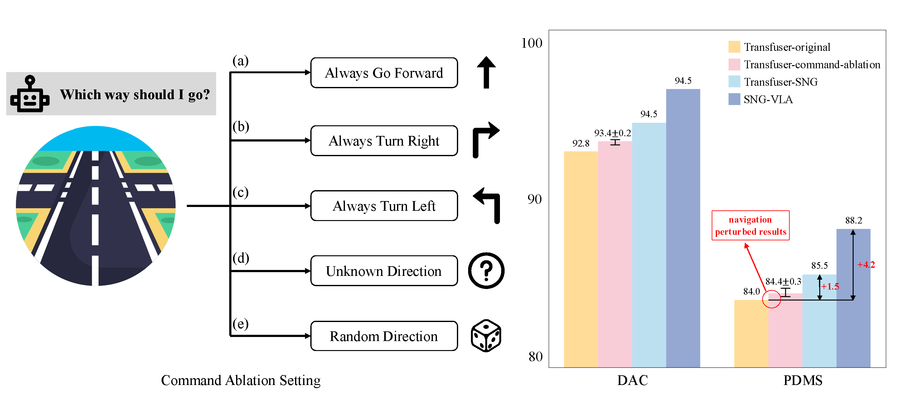
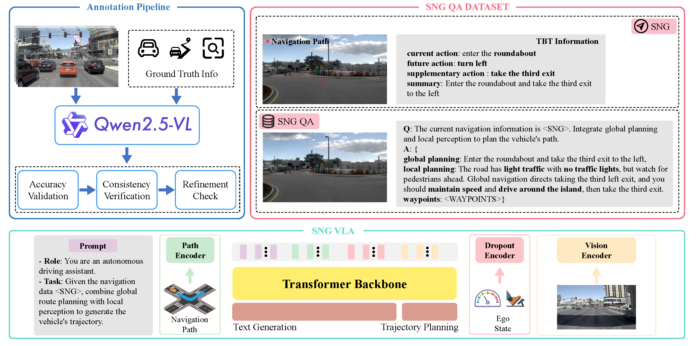
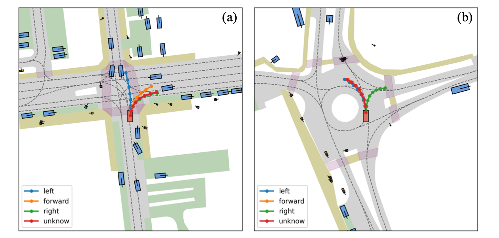
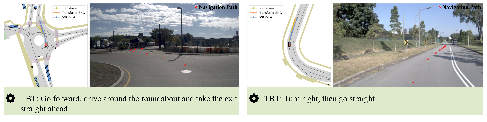

Global navigation information and local scene understanding are two crucial components of autonomous driving systems. However, our experimental results indicate that many end-to-end autonomous driving systems tend to over-rely on local scene understanding while failing to utilize global navigation information. These systems exhibit weak correlation between their planning capabilities and navigation input, and struggle to perform navigation-following in complex scenarios. To overcome this limitation, we propose the Sequential Navigation Guidance (SNG) framework, an efficient representation of global navigation information based on real-world navigation patterns. The SNG encompasses both navigation paths for constraining long-term trajectories and turn-by-turn (TBT) information for real-time decision-making logic. We constructed the SNG-QA dataset, a visual question answering (VQA) dataset based on SNG that aligns global and local planning. Additionally, we introduce an efficient model SNG-VLA that fuses local planning with global planning. The SNG-VLA achieves state-of-the-art performance through precise navigation information modeling without requiring auxiliary loss functions from perception tasks.

Overview of our pipeline. Sequential navigation guidance is consists of navigation path and TBT information. SNG-QA comprises three subtasks: global planning, local planning, and trajectory planning. The architecture of our model is divided into two parts: the multimodal feature fusion encoder and the unified transformer backbone.


We demonstrate the impact of introducing noise to the driving command on the predicted trajectory during the inference process of the Transfuser. The experimental results are based on the official checkpoint.

Qualitative analysis of real-world scenarios. Navigation paths are augmented with substantial noise before being fed into the model to mitigate the influence of privileged information.